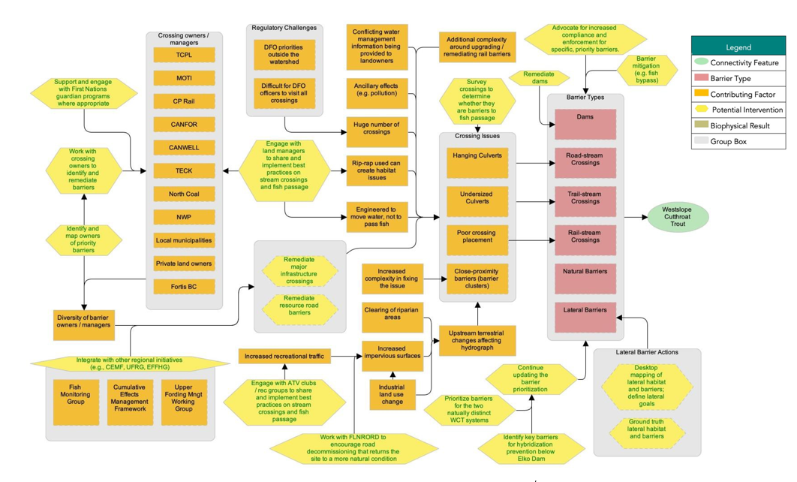
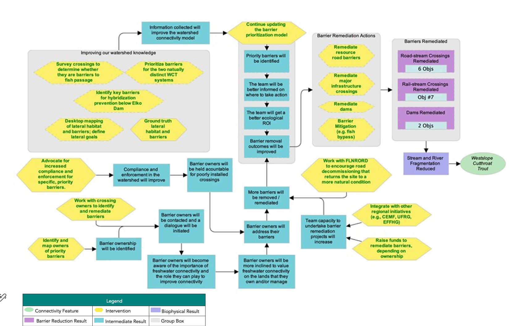
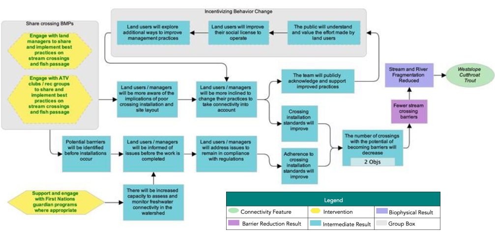

ID | Actions | Details | Feasibility | Impact | Effectiveness |
|---|---|---|---|---|---|
1.10 | Rehabilitate resource road barriers | This action represents some projects that would be led by the planning team with conservation funds (e.g., orphaned barriers or those owned by individuals), while other rehabilitation projects would be the responsibility of the barrier owner. Industry will have to be engaged to successfully implement this intervention. | High | Very high | Effective |
1.20 | Rehabilitate dams | Identify owners of dams that appear on the intermediate barrier lists (see Appendix C) and engage with them to explore technical and financial options. | Medium | Very high | Need more information |
1.30 | Rehabilitate major infrastructure crossings | In most cases, the planning team will engage with barrier owners, but the owners of the barrier would be responsible for the financial cost of rehabilitation. This includes building relationships with CP rail to open a two-way discussion on the scale, priority, and impact to their crossings on the watershed. Include the financial and ecological cost/benefits of rehabilitation options in communication with infrastructure owners. | Medium | Very high | Need more information |
1.40 | Barrier mititgation | Examples may include installing fish ladders on barriers that cannot be rehabilitated; however, temporary mitigation does not replace the need for barrier rehabilitation and removal. There are specific cases where temporary fixes are appropriate, but we will focus on long-term solutions wherever possible. | Medium | High | Need more information |
1.50 | Work with crossing owners to identify and rehabilitate barriers | High | High | Effective | |
1.60 | Advocate for increased compliance and enforcement for specific, priority barriers | Request provincial and/or federal agencies to require that targeted, high-priority barriers be rehabilitated. This should be a last resort after working to engage barrier owners and ground-truthing the situation. It will be important to identify obstacles to applying compliance and enforcement measures in order to provide the appropriate information on these opportunities. | Very high | High | Effective |
1.70 | Work with FLNRORD to encourage road decommissioning that returns sites to a more natural condition | Encourage sharing and implementation of best practices for fish-passage-"friendly" road decommissioning. | Very high | Very high | Very effective |
1.80 | Integrate with other regional initiatives | Engage and pursue coordination and collaboration with existing initiatives, (e.g., Elk Valley Cumulative Effects Management Framework, the Upper Fording River Recovery Group, the Elk Valley Fish and Fish Habitat Committee, and terrestrial connectivity working groups). | Very high | Very high | Very effective |
1.90 | Raise funds to rehabilitate barriers (ownership dependent) | Where appropriate, collaborate within the planning team to raise conservation funds for rehabilitation projects. See “Funding Sources” for more information. | High | Very high | Effective |
1.10 | Knowledge Gap: Assess barriers by applying the provincial fish passage framework | The first three steps are, (1) barrier assessments, (2) habitat confirmations, and (3) rehabilitation designs. Barrier assessment data should be captured in the PSCIS database, which is available to all partners. | Very high | Very high | Very effective |
1.11 | Knowledge Gap: Identify key barriers for hybridization prevention below Elko Dam | Barrier rehabilitation below the Elko dam presents the potential increased risk of hybridization of genetically pure Westslope Cutthroat Trout populations due to reconnection to the Koocanusa Reservoir. As such, prior to any decision, a series of site assessments will need to be performed to assess the risk of hybridization. This action does not directly contribute to the goals, but implementation is necessary for the success of other actions. This strategy should be revisited with First Nations and government agents to determine whether it should be kept as a knowledge gap or if a different approach (i.e., to look at it from a watershed functionality perspective with less concern about hybridization risks) should be adopted. | N/A | N/A | Need more information |
1.12 | Knowledge Gap: Identify and map owners of priority barriers | High | High | Effective | |
1.13 | Knowledge Gap: Prioritize barriers for the Upper Fording and Grave-Harmon populations | Due to the importance of these genetically pure populations within the watershed, ensure that barriers within these systems are evaluated if they do not rank highly in initial barrier prioritization efforts. | Very high | Very high | Very effective |
1.14 | Knowledge Gap: Continue updating the barrier prioritization model | The model process will be finalized, and prioritizations will be updated as new information becomes available. | Very high | Very high | Very effective |
1.15 | Knowledge Gap: Desktop mapping of lateral habitat and barriers; define lateral connectivity goals | This action does not directly contribute to the current goals, but setting lateral goals is a priority. Lateral barriers are considered a low threat in the Elk valley, however work on a provincial scale is underway to determine the impact of rail lines on lateral habitats. | N/A | N/A | Need more information |
1.16 | Knowledge gap: Ground truth lateral habitat and barriers | This action does not directly contribute to the current goals, but is an important step following action 1.15. | N/A | N/A | Need more information |
1.17 | Knowledge gap: Monitor temperature and flows; assess effectiveness of barrier rehabilitation projects | Effectiveness monitoring study design (Lotic) for rehabilitation sites. $35K monitoring equipment for ERA (CNFASAR). | N/A | N/A | Need more information |
The following situation model was developed by the planning team to “map” the project context and brainstorm potential actions for implementation. Green text is used to identify actions that were selected for implementation (Table 16), and red text is used to identify actions that the project team has decided to exclude from the current iteration of the plan, given that they were either outside of the project scope or were deemed to be ineffective by the planning team.

Effectiveness evaluation of identified conservation strategies and associated actions to improve connectivity for Westslope Cutthroat Trout in the Elk River watershed (Qukin ?amak?is). The Planning Team identified two broad strategies to implement through this WCRP: (1) barrier rehabilitation and (2) barrier prevention. Individual actions were qualitatively evaluated based on the anticipated effect each action will have on realizing on-the-ground gains in connectivity. Effectiveness ratings are based on a combination of “Feasibility” and “Impact”, Feasibility is defined as the degree to which the project team can implement the action within realistic constraints (financial, time, ethical, etc.) and Impact is the degree to which the action is likely to contribute to achieving one or more of the goals established in this plan.
ID | Actions | Details | Feasibility | Impact | Effectiveness |
|---|---|---|---|---|---|
2.1 | Engage with land managers to share and implement best practices on stream crossings and fish passage | This should include encouraging better consultation before crossings are installed in the first place. | High | High | Effective |
2.2 | Support and engage with First Nations guardians programs where appropriate | This could include approaching KNC about their existing guardian program. | Very high | High | Effective |
2.3 | Engage with ATV clubs/recreation groups to share and implement best practices on stream crossings and fish passage | Trail-stream crossings have a low extent and severity in the watershed, and it is unlikely that ATV groups are creating barriers to fish passage. | High | Low | Not Effective |
Theories of Change are explicit assumptions about how the identified actions will achieve gains in connectivity and contribute towards reaching the goals of the plan. To develop Theories of Change, the Planning Team developed explicit assumptions for each strategy which helped to clarify the rationale used for undertaking actions and provided an opportunity for feedback on invalid assumptions or missing opportunities. The Theories of Change are results-oriented and clearly define the expected outcome. The following theory of change models were developed by the WCRP Planning Team to “map” the causal (“if-then”) progression of assumptions of how the actions within a strategy work together to achieve project goals.

